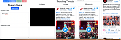
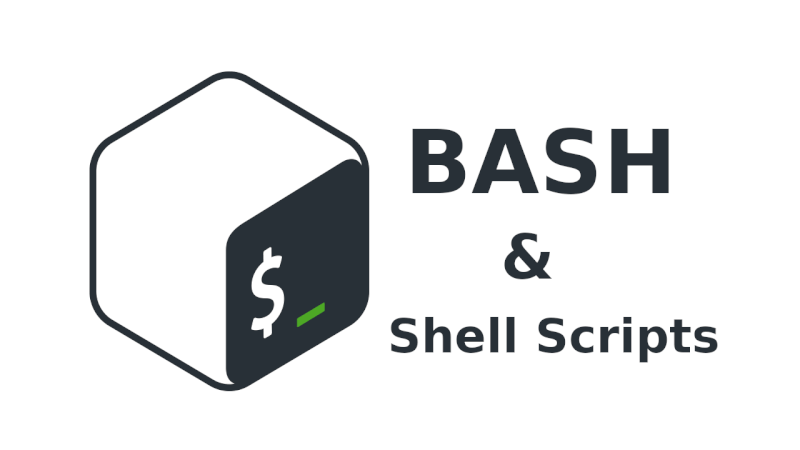
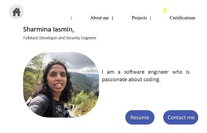

Live Tweet Streaming

I have collected data from the news-angler project and apply visualization techniques
to show the progression of events in relevant charts/graphs in a visual storytelling
format.
Technology used


Infrastructure Design and Deployment, Application Deployment with Ceph Storage, Kasten/Bacula Backup Solution in OpenStack Cloud as a course project
- diverse server types, including development, web, database, backup, virtual, compile, testing and storage.
- Deployed applications like WordPress and JupyterNotebook with persistent storage solutions using Ceph managed by Rook, NFS, and implemented backup solutions using Kasten K10. Implemented the ELK (Elasticsearch, Logstash, Kibana) stack for logging and monitoring.
-
Technology used
Kubernetes, Ceph, Terraform, Ansible, Puppet, K10, Elasticsearch, Logstash, Kibana, Prometheus, Grafana, Ubuntu/Debian, OpenStack Cloud.
Autoscaling of Online Gaming Server
Objective:
This project aims to implement an automated scaling system for an online game server to dynamically adjust instances based on real-time player traffic. The project involves designing and deploying a decision engine that monitors player numbers, evaluates cost-effectiveness, and dynamically scales server instances accordingly.
Achievements:
Designed and executed an automated server management system using Bash scripting, leveraging OpenStack and Prometheus Push gateway. Developed a dynamic system to maintain the optimal number of servers based on real-time usage metrics, achieving cost efficiencies by dynamically scaling server counts as per demand. Integrated Prometheus metrics for monitoring and decision-making, optimizing server costs and resource utilization for an
Technology used

Currency exchange rate prediction
Objectives:
Engineered a Python-based currency exchange rate prediction tool using Norges Bank's API, analyzing a decade's worth of data. Developed algorithms to dissect data into time windows, compute segment variances, and predict rate changes based on diverse rules. Achieved comprehensive accuracy analysis by generating comparative prediction tables for multiple currencies and time frames, enabling informed conclusions on prediction performance.
Achievements:
Developed two scripts in Python to predict currency exchange rate changes, employing various algorithms and data analysis techniques. Created functionalities for correlation-based, mean-based, and threshold-based predictions, visualizing and comparing their accuracies over different time windows and multiple currencies. Employed data retrieval, preprocessing, and comparison techniques to assess predictive models, enhancing decision-making insights and algorithmic evaluations.
Technology used
Track the availability of wares for a Business.
Objectives:
Developed a program for a business inventory tracking system. Contributed to designing a class structure to represent businesses, managing stock availability, pricing, deals, and financials. Implemented a user interface facilitating stock management, sales, and financial checks for businesses. Emphasized data persistence by enabling information retention between sessions, enhancing user experience and business functionality.
Achievements:
Engineered a Python-based inventory management system for businesses, integrating data persistence, user interface, and comprehensive functionalities. Collaborated within a team to develop a robust solution facilitating stock management, sales, and financial tracking. Achieved seamless user interactions through error handling and input validation, demonstrating strong Python proficiency and teamwork.
Technology used
Portfolio
I describes about my work, education and others.
Technology used


